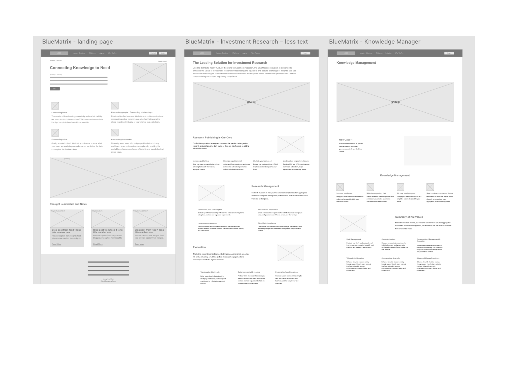
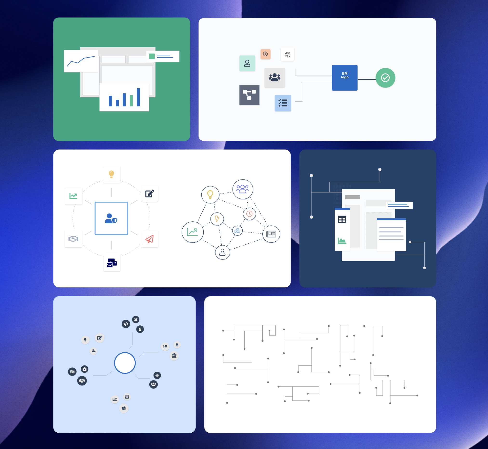
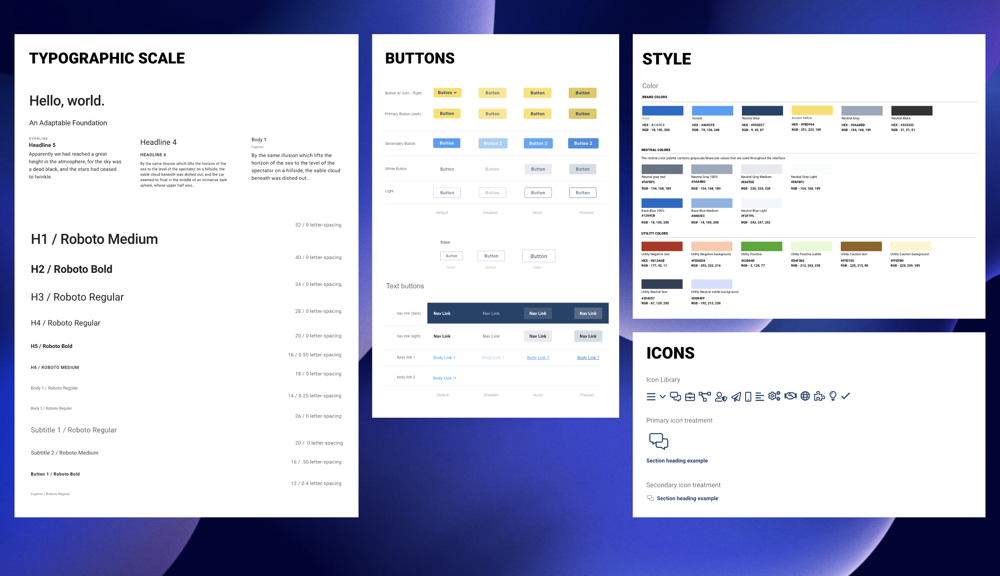
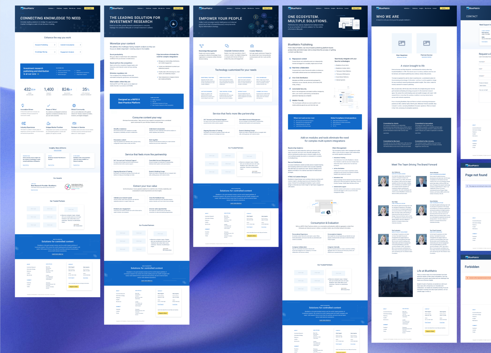
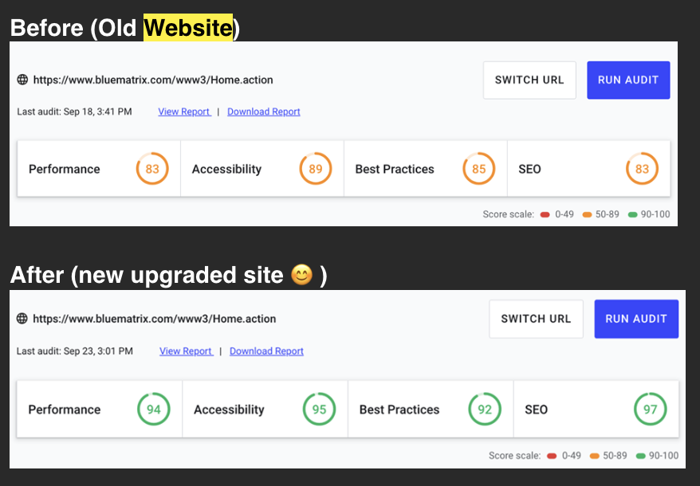

Company website redesign
Highlighting market expertise for improved product communication & impact
- Company
- BlueMatrix
- Role
- Lead Designer & Developer
- Tools
-

A Brand Ready to Grow
BlueMatrix needed a more robust website to reflect its evolution and launch a new corporate logo and visual identity. The redesign was an opportunity to better communicate the platform's capabilities and reposition the brand for growth.
Repositioning for a Wider Market
Beyond an updated look and feel, the primary goals were to:
- Restructure how we market investment research products
- Reposition market expertise to attract new industries
- Introduce an insights page, client logos, and product graphics to build brand trust
From Scattered Input to Shared Vision
I translated early discussions between design and marketing teams into low-fidelity wireframes, used to visualize how text-heavy content would fit each page and how to balance it with visual elements.

A fellow designer and I developed mood boards, design systems, and core visual elements, presenting regularly to leadership to ensure alignment. We incorporated feedback from stakeholders across the organization including the CEO, Sales, and Product leads.
After design approval, I led development and implementation of all webpages, including forms, authentication flows, and blog publishing.



Built to Grow With the Business
The redesign shipped with meaningful improvements in accessibility, SEO, and performance, and received strong positive feedback across the organization.
The result is clean, stylish, bug-free, performant and appropriate for our industry. We've all heard a lot of positive comments so far.

The redesigned site served as the firm's primary web presence through a pivotal period, supporting the onboarding of several major institutional clients across global banking and asset management, a private equity acquisition, and a more than threefold expansion of the firm's team.